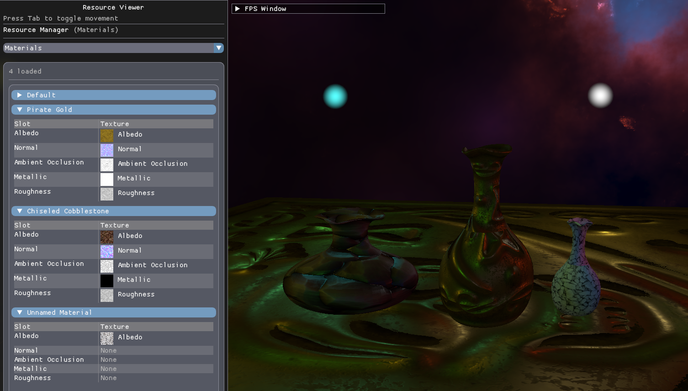
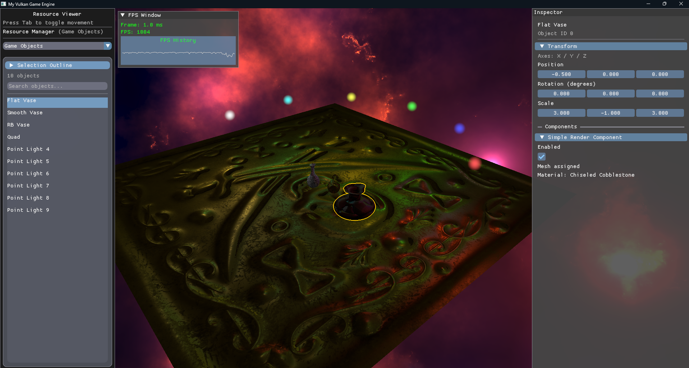
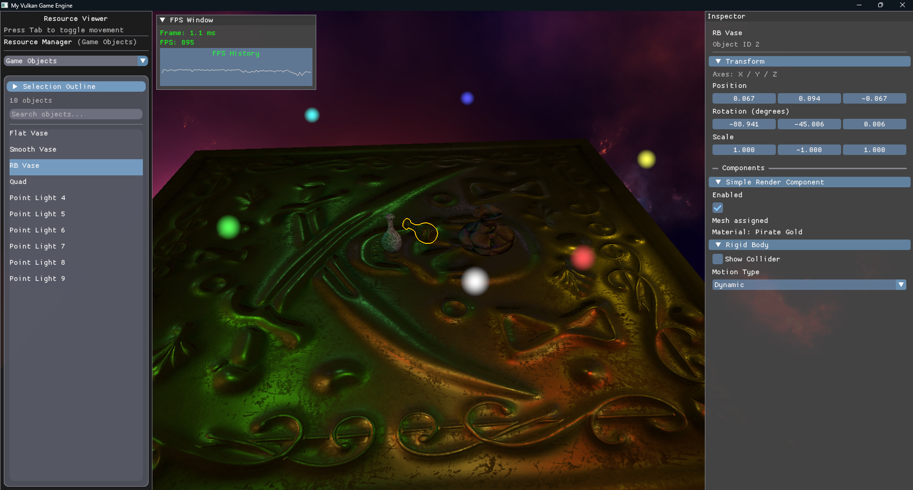
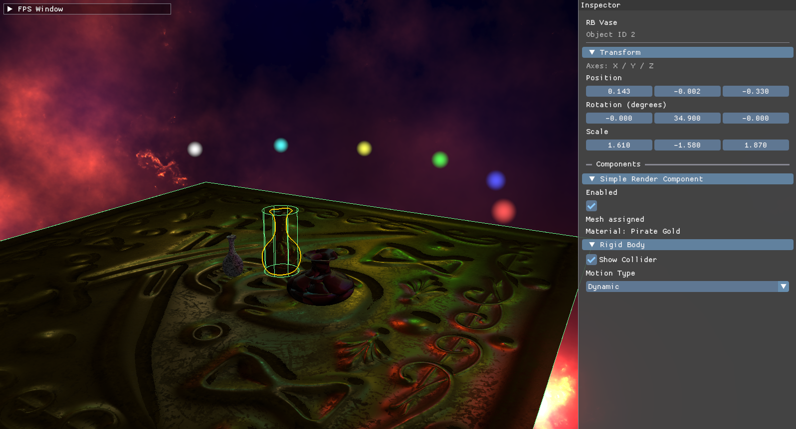
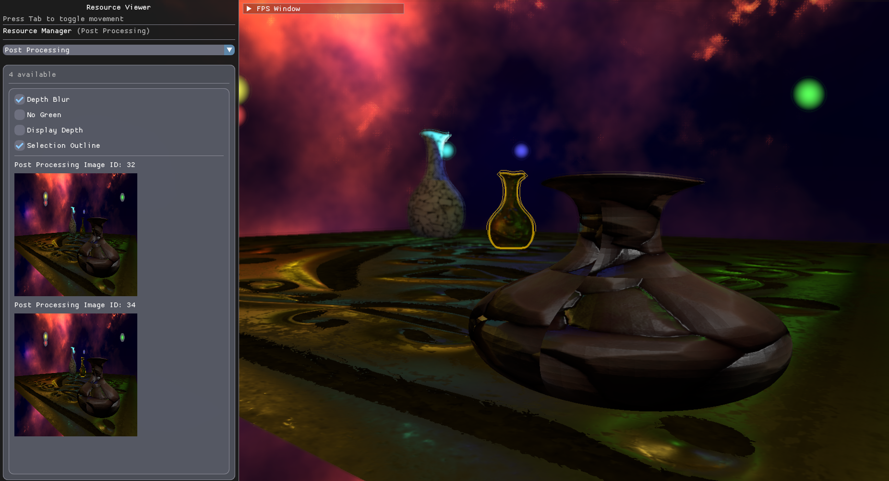

Vulkan Game Engine
A custom rendering and engine playground, with physically based materials, interactive scene editing, GPU object picking, and integrated rigid-body physics.

PBR rendering
I’m building a personal game engine in C++ with Vulkan, bringing rendering, scene components, physics, and editing tools into one application. It’s a place to work directly with GPU resources and turn graphics experiments into reusable engine systems.
The renderer uses a metallic–roughness PBR workflow with albedo, normal, ambient occlusion, metallic, and roughness maps. The GLSL shader combines a GGX specular distribution, Schlick Fresnel, and distance-attenuated point lights. Tangent-space normal mapping adds surface detail, while a selectable skybox gives the scene its backdrop.

An editor connected to the running scene
The Dear ImGui interface combines a resource manager, searchable game-object list, and object inspector. Select an object to edit its position, rotation, scale, and exposed component parameters directly in the running scene. Material texture previews, skybox selection, and frame-time graphs keep the tools close to the work.
GPU object picking connects a click in the viewport to the inspector. The scene pass writes an integer object ID alongside its color output; a one-pixel readback identifies the selected object. Readback follows the existing frame fences, and selection revisions prevent an older result from replacing a more recent selection.
A post-process outline makes the selected object easy to follow, with adjustable color and thickness.


Jolt physics & collider visualization
I integrated Jolt Physics through a rigid-body component, connecting the physics world to scene objects. The inspector exposes static, kinematic, and dynamic motion types, and transform edits are propagated to the physics body.
Collider visualization makes the invisible collision geometry visible in the scene. Being able to inspect a body’s shape beside its rendered mesh helps diagnose alignment and collision behavior while working in the editor.

A configurable post-processing pipeline
The scene renders to separate color, depth, and object-ID attachments. Post-process effects can be enabled from the resource manager and chained through intermediate color targets before presentation. The original depth and object IDs remain available throughout the chain.
Current effects include depth-based blur, depth visualization, a color-channel filter, and the selection outline. Separating the scene data from the final image lets the same renderer support both visual effects and editor feedback.

Components, resources & GPU experiments
Game objects compose rendering, point-light, rigid-body, and update behavior through components. Scene registries keep track of the components each system needs. Typed parameter descriptors expose component fields to the inspector, so editing a value changes the underlying component directly.
Texture files are read on a background thread, then finalized and registered on the application side. The resource manager provides previews of textures and the five PBR material slots.
Compute shader experiments
The codebase also includes compute-driven particle flocking with attraction, repulsion, alignment, boundary forces, and a configurable speed limit, plus a procedural noise-texture compute system. These are experimental systems; their dispatch calls are currently disabled in the main application loop.